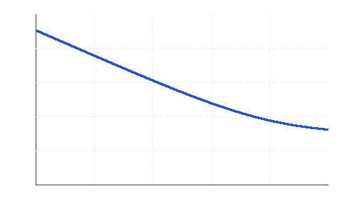

2026-01-15 (Thursday)
Shorted-input noise measurement shows a 1/f corner near 3 Hz.
Notes
Sample note. Everything in
examples/is fictional and exists only to show the format. Delete the folder in your own copy.
To do today
- Short the ADC inputs and log 10 minutes of data
- → Compare against the datasheet noise table (carried to 2026-01-16)
- → Re-run with the reference buffer bypassed #todo (carried to 2026-01-16)
Log
- 09:10 Inputs shorted at the connector, board on the bench supply, lid closed.
- 09:25 Logged 10 min at 10 SPS. Raw data kept out of the repo; summary in
data/noise-density.csv. - 10:05 Input-referred noise looks higher than expected below 3 Hz.
Measurements / results
Thermal noise of the source resistance sets the floor:
$$e_n = \sqrt{4 k T R \,\Delta f}$$
For $R = 10\,\mathrm{k\Omega}$ at 300 K that is about $12.9\,\mathrm{nV}/\sqrt{\mathrm{Hz}}$.
| Frequency | Measured (nV/√Hz) | Note |
|---|---|---|
| 0.1 Hz | 720 | 1/f dominated |
| 3 Hz | 170 | corner |
| 100 Hz | 41 | white floor |

Ideas / questions
- Is the low-frequency excess the reference buffer or the supply? #noise
- Try battery supply to separate the two.
References
- Datasheet noise table (see project notes)